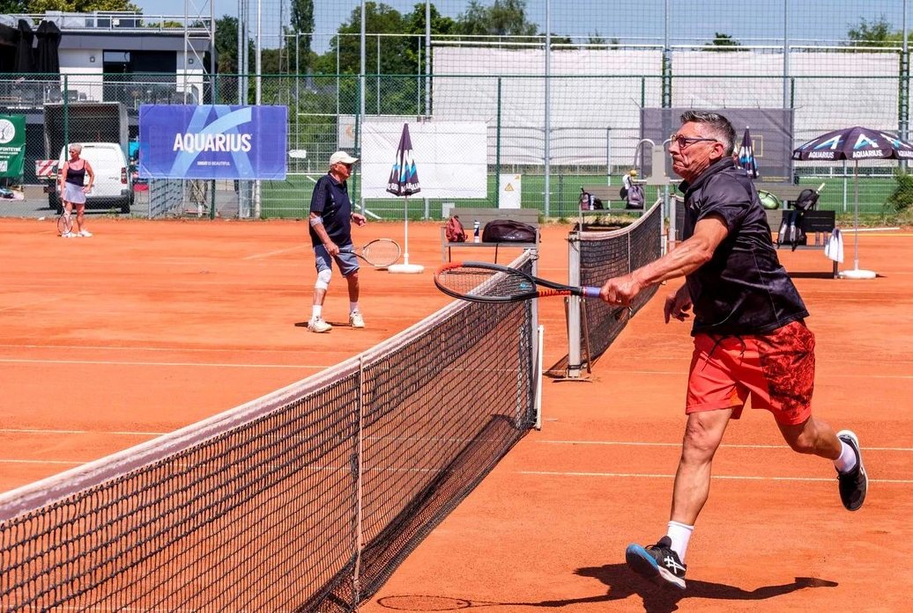
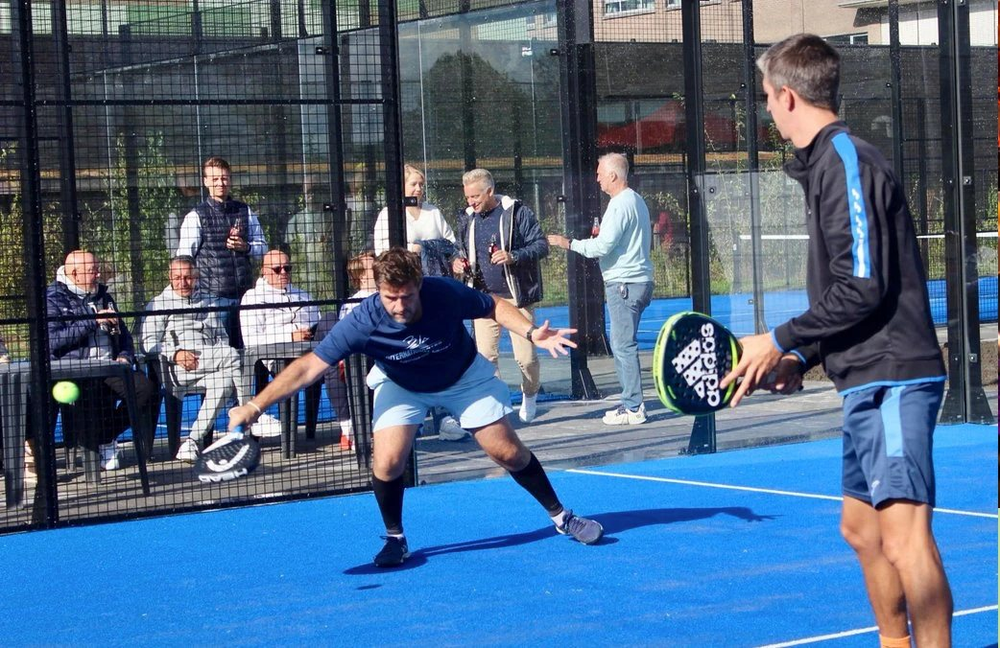

Vier gravelbanen, drie padelterreinen.
Recreatief, in competitie of gewoon een balletje met vrienden. Leden reserveren online en betalen geen reservatiekosten.

Gravel, van april tot oktober
Vier gravelbanen in het groen, bespeelbaar van 1 april tot 31 oktober. Zacht voor de gewrichten, ideaal voor beginners én voor lange rally's. Kinderen spelen samen met hun ouders ook tijdens de spitsuren.
Het hele jaar door
Drie nieuwe terreinen, open in zomer en winter, voor leden en hun vrienden. Padel leer je in één uur. Lessen voor volwassenen op maandag vanaf 19u30 en woensdag vanaf 17u30: 8 lessen van 1 uur voor € 360 per terrein (max. 4 personen), inschrijven via info@trgb.be.

Terrein reserveren
Via de app of website van Tennis en Padel Vlaanderen, met je lidnummer. Leden spelen gratis. Niet-leden kunnen een padelterrein huren: € 6 per persoon in daluren, € 8 in piekuren.
Dubbel, om de twee weken
Teams spelen tegen elkaar en klimmen in de rangschikking, telkens tegen een tegenstander van hun niveau. Tennis én padel, enkel voor leden, aansluiten kan op elk moment.
Vier per jaar
Drie padeltornooien en een tennistornooi, alle niveaus welkom. Inschrijven via Tennis en Padel Vlaanderen.
Data in de kalender